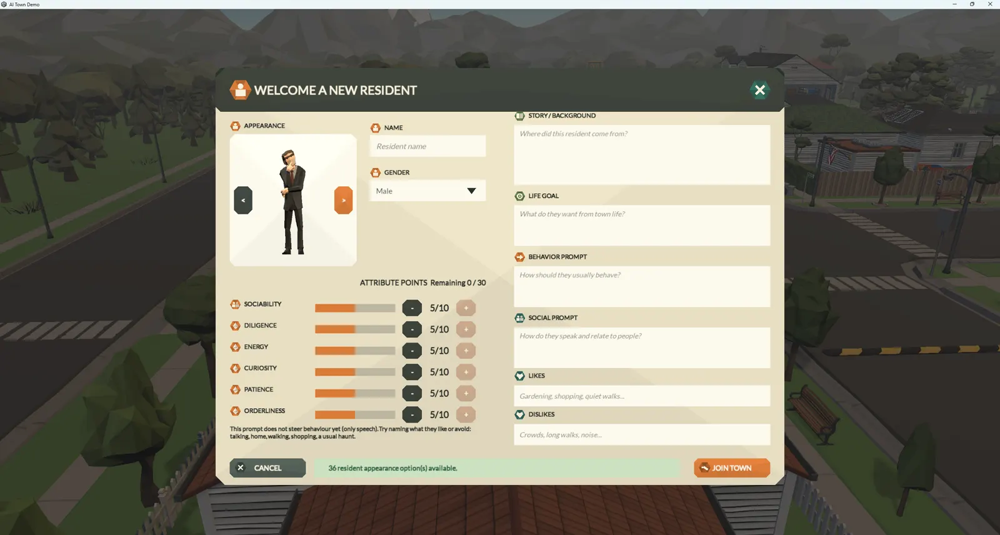
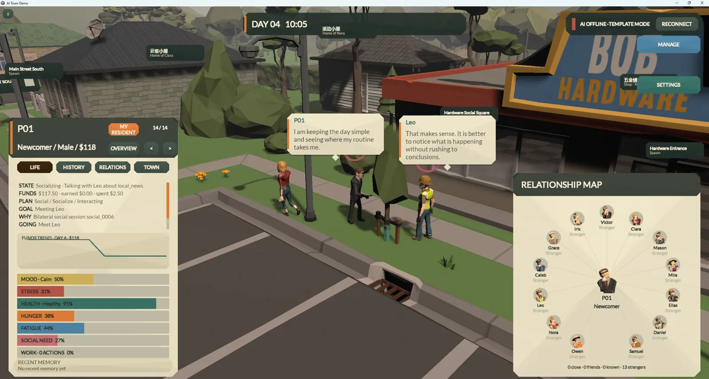
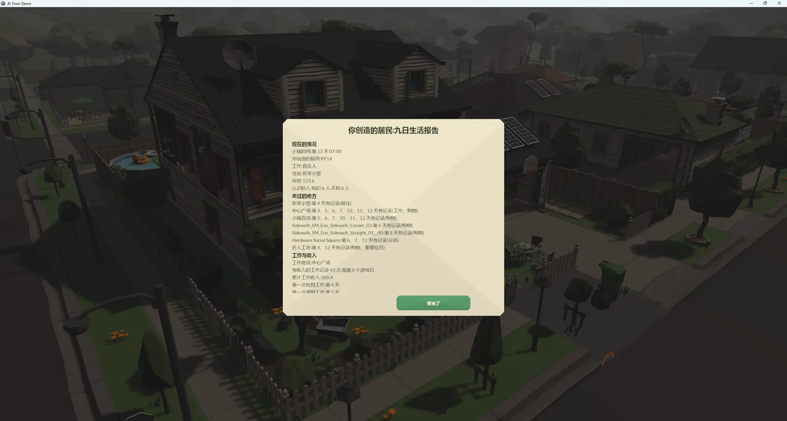
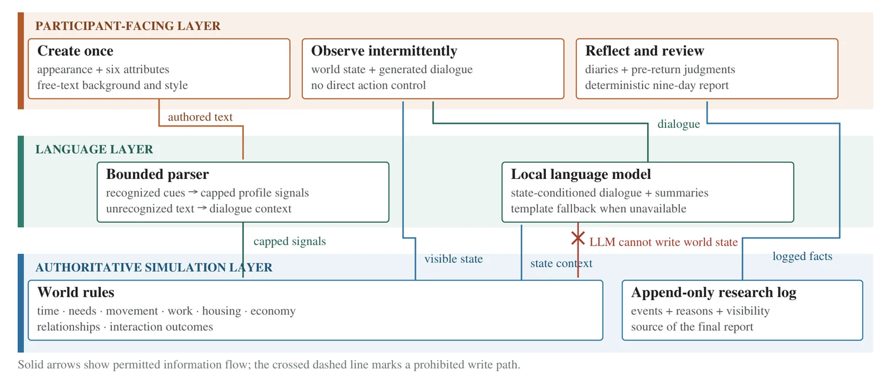
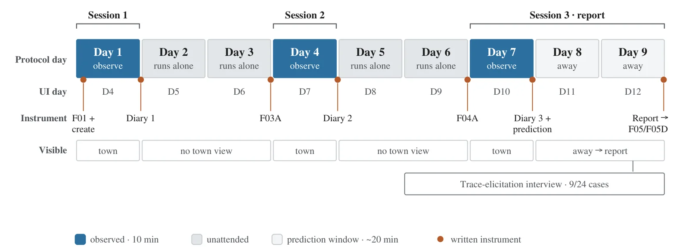
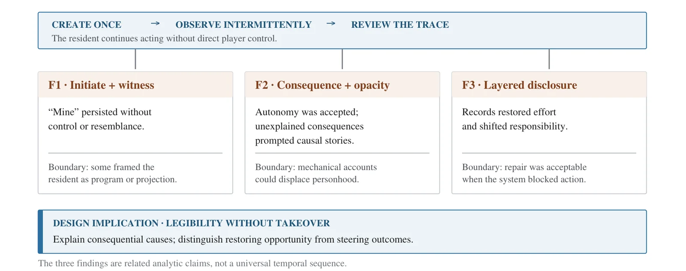

AI Town
A player authors one resident, then never controls it again. A Unity 6 town simulation, and a 24-participant study of how people explain a life they started but cannot steer.
Project Overview
AI Town is a single-player 2.5D low-poly town built in Unity 6, and the research probe built around it. Thirteen established residents and one player-created resident navigate, work, use facilities, transact, find housing, and shift their social relationships over nine simulated days. The player authors the resident once — appearance, attributes, background, life goal, behaviour, social style, likes and dislikes — and from then on can only watch, follow, and inspect. Occupation, housing, routes and decisions are never assigned by the player.
Two Authorities, Deliberately Separated
Unity rules are the only thing that settles world state and writes the research log. A local language model — Qwen3-4B served by llama-server, fully offline — expresses that state as dialogue and summaries, but cannot award money, create a friendship, or decide whether an event occurred; a bounded parser may make capped profile adjustments and nothing more. That separation is what makes the town auditable: every claim in the study traces back to a rule-written event rather than to generated text. When the model is unavailable the interface falls back to templates and says so on screen.
Study Design
Each participant authored one resident and observed it across three sessions on consecutive real-world days, covering simulated Days 1, 4 and 7. The town ran unattended in between, and again on Days 8–9 after the participant locked a written prediction and left. Everyone then read a complete nine-day report: housing, employment, savings, relationships, places visited, work and income, purchases, health events, and a day-by-day trajectory. Nine participants joined a later trace-elicitation interview in which a backend disclosure layer was introduced only after their own account had been recorded.
What the Study Found
Free-text profiles often diverged from the resulting trajectories. Ownership persisted through having initiated a life, worried about it, and remained answerable for it — not through control; boundary cases instead framed the resident as an employee, a projected story, or a program. Participants accepted autonomous action, but questioned consequential relationship changes that arrived without a visible cause. Participant-facing reports restored evidence of unseen effort, while later backend disclosure supplied structural explanations. In two trajectories blocked by the same software defect, participants drew a clear line between a one-time repair and ongoing control.
My Contribution
I built both halves. On the system side: the rule engine and its versioned ruleset, resident authoring, the needs / work / housing / relationship systems, the observation interface, the nine-day report, the offline language-model service with its template fallback, and the research logging that makes every trajectory auditable. On the study side: protocol and instruments, the operator deployment package used to run sessions on other people's machines, session operation, the analysis pipeline, and the manuscript prepared for CHI 2027. The twenty-four cases ran across eight build and ruleset groups, and the manuscript reports that version spread rather than flattening it.
Gallery
Authoring, observation, the nine-day report, and the diagrams describing the system boundary and the study procedure. Screenshots are post-study demonstration captures; the names visible in them are synthetic interface data and identify no participant.





